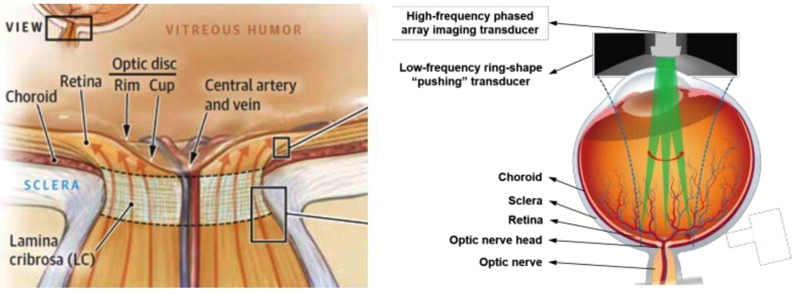
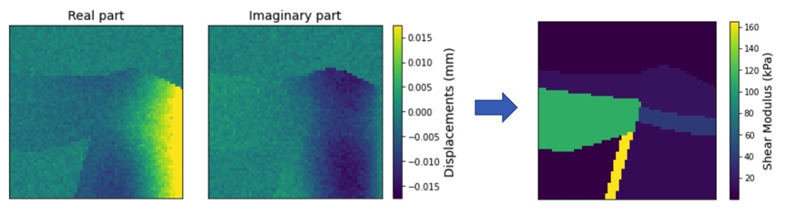
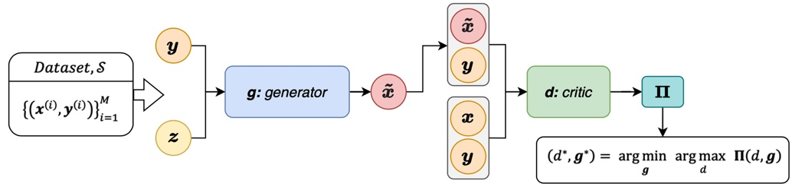

Conditional GANs for ultrasound imaging of the optic nerve head
We are using conditional GANs (cGANs) to obtain the biomechanical properties of the optic nerve head (ONH) by measuring the propagation of shear waves with an ultrasound transducer.
Glaucoma is the leading cause of irreversible vision loss in the world and it is believed to occur due to damage in the optic nerve head (ONH, see Figure 1 left). Unfortunately, current tools do not allow to measure the mechanical properties of the ONH. To overcome this, we are developing a computational method based on deep learning that, combined with state-of-the-art shear wave elastography (SWEI) technology (see Figure 1 right), would allow to accurately obtain the biomechanical properties of the ONH and adjacent tissues.

Figure 1: (Left) Anatomy of the optic nerve head. (Right) Schematic of the ultrasonic elastography of the posterior sclera.
In SWEI, we use measured displacements to estimate the biomechanical properties of physiological tissues. Hence, we need to solve the inverse elasticity problem, which we model using the Helmholtz equation. Thus, the computational method will map the real and imaginary part of the shear wave amplitudes at a given frequency to the shear modulus distribution of the ONH (see Figure for an example of inputs and outputs of the method).

Figure 2: Inputs (left) and output (right) of the cGAN. The figures on the left present the real and imaginary parts of the shear wave amplitudes and the figure on the right presents the shear modulus distribution. These samples were generated using a simplified geometry.
The computational method that we are studing consists of two main parts: the cGAN (see and schematic representation in Figure 3) that maps the noisy shear wave amplitudes to the shear modulus distributions and an OOD detection method that detects anomalies in new measurements. We are confident that the method proposed will allow to efficiently measure the biomechanical properties of the ONH in real-time and with greater accuracy than it is currently done. There are no other studies presenting deep learning methods applied to ultrasound elastography of the ONH. Therefore, by means of this research, we will develop a novel medical imaging method that would greatly help the understanding of Glaucoma.

Figure 3: Overview of the conditional GAN model.